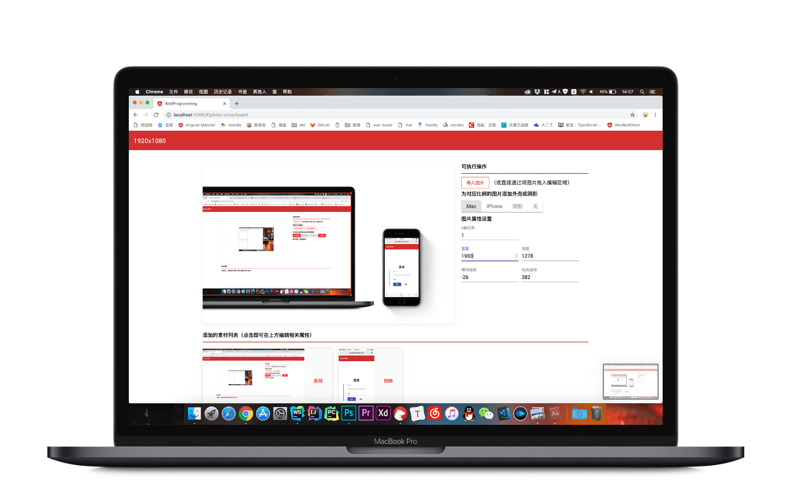
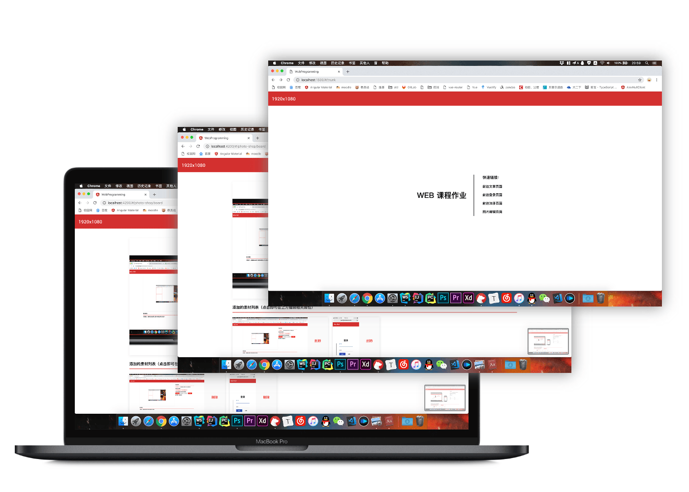
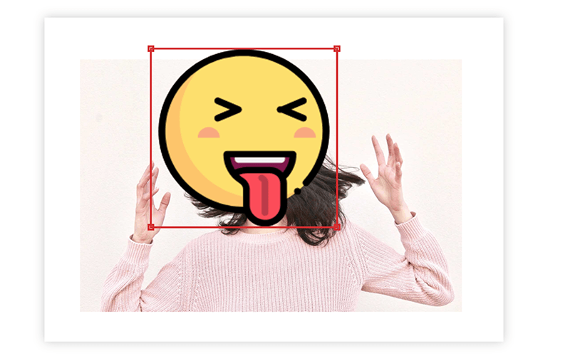
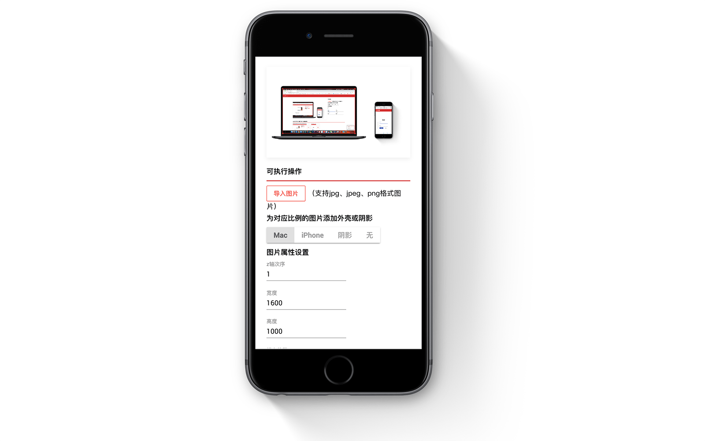
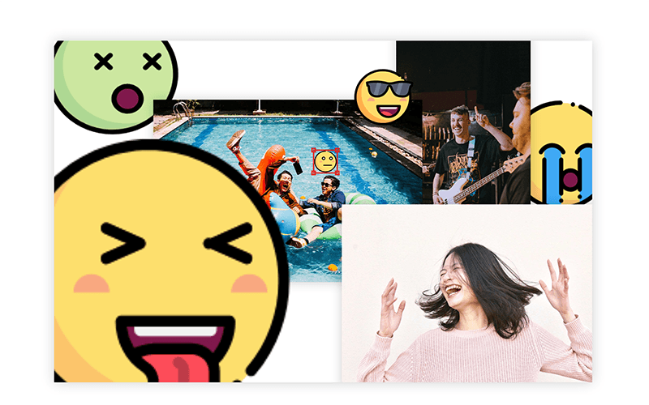

图片编辑功能介绍
背景与思考
- 本网站定位为一个开放的博客平台，在未来期望能够让用户以markdown写作。
- 目前已经添加了marked.js，能够进行简单的写作，但是md写作的一大问题就是图片并没有给用户选择样式的机会。
- 这个图片编辑功能即准备着手以在线编辑的手段解决这个问题。
- 在未来，为这个项目添加上后端代码之后，编辑完成的图片即可一步上传、获取链接、嵌入md中，是一个比较合理简单的流程。
- 简介中的所有图片均使用本编辑工具所得。
所使用的技术
- 页面搭建考虑到未来的可扩展性使用了angular。
- （仅出于兴趣添加）marked.js为一个开源项目。
- canvas部分全部仅使用原生接口。

功能特性
图片特效
- 允许您对图片添加Mac外壳或者iPhone外壳，这对于科技类博客的作用是非常之大的。
- 为您的图片添加阴影，您可以对单张图片添加阴影，使得您的图片在博客文章中与文字信息和背景区分开来。
- 也可以为多张图片添加阴影，使得白色背景的图片在与背景区别开来的同时，使多张图片的显示具有一目了然的层级关系。

直觉化的选中、编辑
- 在画布中点击元素即可选中，选中元素会浮动到最上层以方便编辑。
- 拖拽四角即可对图片进行拉伸。
- 在指示线框内部任何区域拖拽即可实现元素的移动。
- 在指示线框外部点选即可选中另外的元素或者取消选中任何元素。
- 这一切都非常直觉化，符合用户其它软件的使用经验。

优秀的响应式设计
- 重点解决了canvas长宽变化导致的鼠标事件定位偏移。
- 引入对于界面变化尺寸的监视，在变化时及刻更新比例系数，使得在显示、操作时都能精准无误。
- 在移动端，显示也同样优秀、自然。

Z轴顺序修改
- 这个编辑工具支持您修改任意元素的Z轴顺序
- Z轴的编辑是这个工具最为重要的特性，希望您利用Z轴的支持和上述功能特性的组合，将您的想象力变为现实吧！
就像我利用这个工具编辑了这个界面所有的配图，现在您也可以在下方开始您的想象力之旅了！
